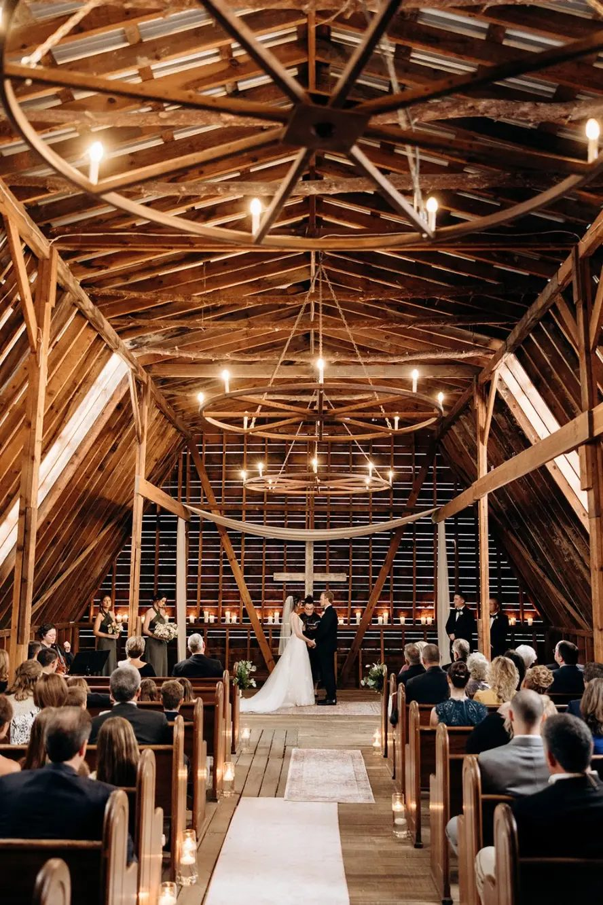
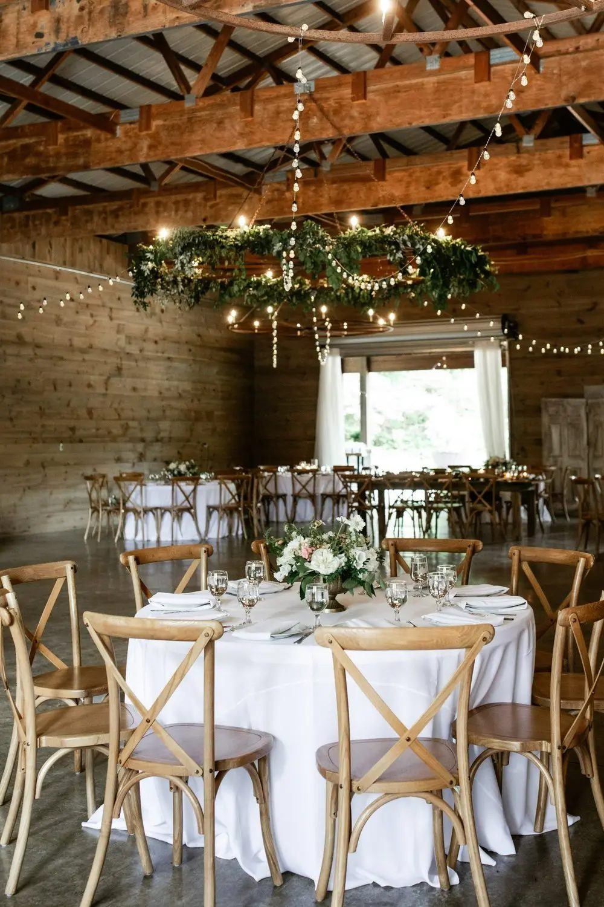
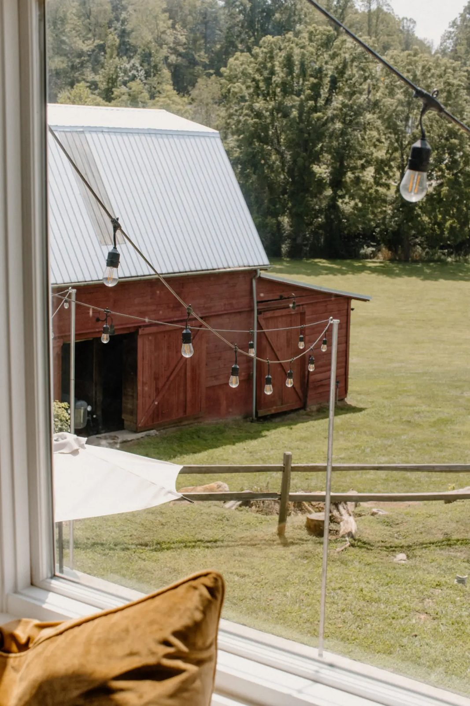

Asheville, North Carolina
The Barn at Honeysuckle Hill is a 9 acre estate wedding venue with a 100 year old chapel, a restored red barn, a bridal suite, all-inclusive and elopement packages, and a pet-friendly policy.
The Barn at Honeysuckle Hill is a 9 acre estate wedding venue in Asheville. It offers a 100 year old chapel, a restored red barn, a bridal suite, all-inclusive and elopement packages, capacity for 150, and a pet-friendly policy. Call to ask about dates.


2 Country Spring Dr, Asheville, NC 28804
Sunday 12:00 PM to 5:00 PM, Tuesday to Saturday 9:00 AM to 5:00 PM